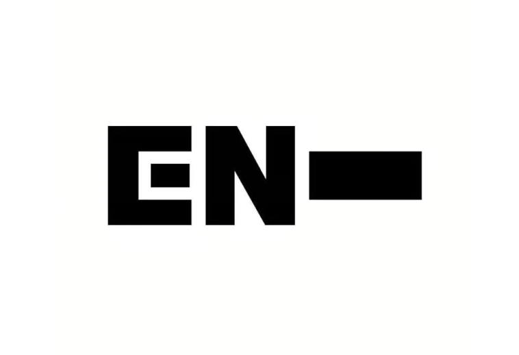

ENHYPEN (엔하이픈) is the final 7 members of the survival show I-LAND under BE:LIFT Lab, a subsidiary label under HYBE. The group consists of Jungwon, Heeseung, Jay, Jake, Sunghoon, Sunoo, and Ni-ki. They debuted on November 30, 2020, with their first mini album, BORDER: DAY ONE.< The group made their Japanese debut on July 6, 2021.
Group Name Meaning: ENHYPEN is a mix of an en dash and a hyphen that connects different words to create new meaning, members of ENHYPEN will connect, discover each other, and grow together.
Official Greeting: “CONNECT! Hello, we are ENHYPEN!”
ENHYPEN Official Fandom Name: ENGENE (엔진)
Fandom Meaning:The fans are the “engines” that let the members grow and keep on going. The fans are ENHYPEN’s “GENE”, the fans and ENHYPEN share the same DNA to connect discover, & grow together.
ENHYPEN Official Color:N/A
ENHYPEN Official Logo:
Website: beliftlab.com/artist/profile/ENHYPEN / (Japan): enhypen-jp.weverse.io
Store: shop.enhypen-official.us
Instagram: @enhypen / @darkmoon_hybe
X: @ENHYPEN / (Members): @ENHYPEN_members / (Japan): @ENHYPEN_JP / @DARKMOON_HYBE
TikTok: @enhypen
YouTube: ENHYPEN
SoundCloud: ENHYPEN
Facebook: ENHYPEN
Naver Blog: ENHYPEN
Weverse: ENHYPEN
Weibo: @ENHYPEN
bilibili: ENHYPEN